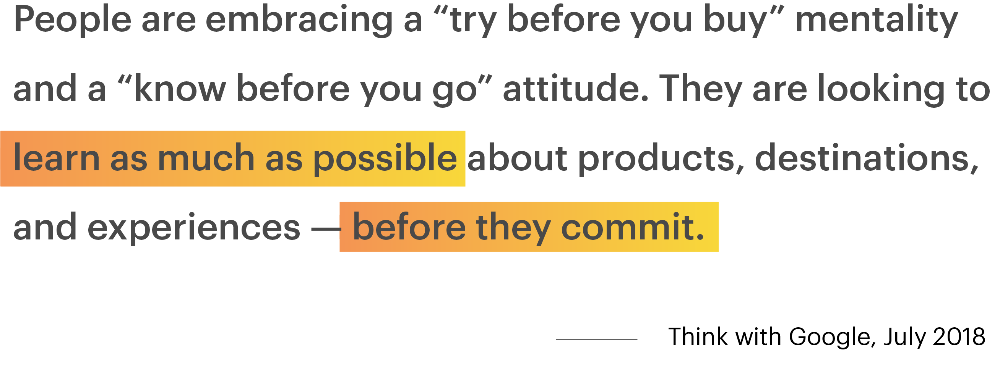

dutchDesign2019 is a website that encapusulates the experience of a design-oriented field school program which includes 16 interviews with designers and visual anecdotes of the 2 month experience.
Context
This was a 1-week long side-project done in the summer of 2018, in collaboration with my friend, Jenny Nguyen. I took on this project as a means to develop my technical and conceptual thinking skills. The task of this project was to introduce a new feature to an existing application. My specific roles included conducting research, developing insights, creating low and high fidelity prototypes and user testing. Primary tools I used were Sketch, Principle, Photoshop, and Illustrator.
The Idea
Instagram Discover is a feature that lets users scan products, then provides a curated feed of the product in context, and another feed that shows similar items available for purchase on the application itself. The feature uses existing computer vision technology to recognize and understand digital images and provides appropriate output accordingly.
RESEARCH
Insight - 01
Before making a purchase, a common question that often formulates in consumers’ minds is, “Do I really need this?” They need to know what they are about to purchase is worth the investment. If it is a piece of clothing, then consumers may try to imagine how they could style it. If it is a piece of furniture, then they would want to know how it may look in an actual home.
Insight - 01
Insight - 01
Opportunity
We broke down a buyer's decision process to understand how ....
The buyer decision process with the potential touchpoint where Instagram could add value.
COMPETITOR ANALYSIS
Pinterest Lens
After developing the idea of Instagram Discover, we came across a similar feature called Pinterest Lens. The function of Pinterest Lens is comparable to Instagram Discover, but as a recommendation-orientated platform, a lot of its content is aggregated from the web. There is a lack of original content from Pinners.
Conversely, Instagram has a higher percentage of original content, thus, building a digital space with a stronger sense of credibility - even personality. And as influencer marketing is prevalent on Instagram, product posts from prominent profiles influence user’s purchasing decisions, creating aspirational value that Pinterest lacks.
TECHNOLOGY
Computer Vision
Instagram Discover would primarily be using computer vision technology, a form of artificial intelligence. Also known as image recognition, this technology allows machines to interpret the photo taken and categorize what it “sees.” Instagram has the added advantage of utilizing hashtags which may be used to validate the product query process.
Google's Cloud Vision model
Signal-to-Noise
Scan object
The discover feature is placed by the search bar, where the user is prompted to scan items with ___ to visually isolate the product.
Discover ideas and options
Scanning an item will then display two feeds: User generated content that contains visually similar looking products
Discovered
Previously scanned photos can be found in the side bar on the profile page. Here they can revisit the photos to browse outside of the micromoment experience.

Feed screen vs Search screen
DESIGN DECISION #1
Feature Placement
We realized the camera screen was accessible through 3 different areas of the app. So we conducted A/B testing with 3 different entry points to evaluate the most efficient placement/engagement for this feature. 5 out of the 7 participants expected the feature to be found be the search bar due to the association with the action searching an object.
Page view vs Modal view
DESIGN DECISION #2
Page vs Modal view
Another dilemma we debated about was the visual appearence of the search result screen.